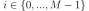

linalg.
eig
Compute the eigenvalues and right eigenvectors of a square array.
Matrices for which the eigenvalues and right eigenvectors will be computed
The eigenvalues, each repeated according to its multiplicity. The eigenvalues are not necessarily ordered. The resulting array will be of complex type, unless the imaginary part is zero in which case it will be cast to a real type. When a is real the resulting eigenvalues will be real (0 imaginary part) or occur in conjugate pairs
The normalized (unit “length”) eigenvectors, such that the column v[:,i] is the eigenvector corresponding to the eigenvalue w[i].
v[:,i]
w[i]
If the eigenvalue computation does not converge.
See also
eigvals
eigenvalues of a non-symmetric array.
eigh
eigenvalues and eigenvectors of a real symmetric or complex Hermitian (conjugate symmetric) array.
eigvalsh
eigenvalues of a real symmetric or complex Hermitian (conjugate symmetric) array.
scipy.linalg.eig
Similar function in SciPy that also solves the generalized eigenvalue problem.
scipy.linalg.schur
Best choice for unitary and other non-Hermitian normal matrices.
Notes
New in version 1.8.0.
Broadcasting rules apply, see the numpy.linalg documentation for details.
numpy.linalg
This is implemented using the _geev LAPACK routines which compute the eigenvalues and eigenvectors of general square arrays.
_geev
The number w is an eigenvalue of a if there exists a vector v such that a @ v = w * v. Thus, the arrays a, w, and v satisfy the equations a @ v[:,i] = w[i] * v[:,i] for .
a @ v = w * v
a @ v[:,i] = w[i] * v[:,i]
The array v of eigenvectors may not be of maximum rank, that is, some of the columns may be linearly dependent, although round-off error may obscure that fact. If the eigenvalues are all different, then theoretically the eigenvectors are linearly independent and a can be diagonalized by a similarity transformation using v, i.e, inv(v) @ a @ v is diagonal.
inv(v) @ a @ v
For non-Hermitian normal matrices the SciPy function scipy.linalg.schur is preferred because the matrix v is guaranteed to be unitary, which is not the case when using eig. The Schur factorization produces an upper triangular matrix rather than a diagonal matrix, but for normal matrices only the diagonal of the upper triangular matrix is needed, the rest is roundoff error.
Finally, it is emphasized that v consists of the right (as in right-hand side) eigenvectors of a. A vector y satisfying y.T @ a = z * y.T for some number z is called a left eigenvector of a, and, in general, the left and right eigenvectors of a matrix are not necessarily the (perhaps conjugate) transposes of each other.
y.T @ a = z * y.T
References
G. Strang, Linear Algebra and Its Applications, 2nd Ed., Orlando, FL, Academic Press, Inc., 1980, Various pp.
Examples
>>> from numpy import linalg as LA
(Almost) trivial example with real e-values and e-vectors.
>>> w, v = LA.eig(np.diag((1, 2, 3))) >>> w; v array([1., 2., 3.]) array([[1., 0., 0.], [0., 1., 0.], [0., 0., 1.]])
Real matrix possessing complex e-values and e-vectors; note that the e-values are complex conjugates of each other.
>>> w, v = LA.eig(np.array([[1, -1], [1, 1]])) >>> w; v array([1.+1.j, 1.-1.j]) array([[0.70710678+0.j , 0.70710678-0.j ], [0. -0.70710678j, 0. +0.70710678j]])
Complex-valued matrix with real e-values (but complex-valued e-vectors); note that a.conj().T == a, i.e., a is Hermitian.
a.conj().T == a
>>> a = np.array([[1, 1j], [-1j, 1]]) >>> w, v = LA.eig(a) >>> w; v array([2.+0.j, 0.+0.j]) array([[ 0. +0.70710678j, 0.70710678+0.j ], # may vary [ 0.70710678+0.j , -0. +0.70710678j]])
Be careful about round-off error!
>>> a = np.array([[1 + 1e-9, 0], [0, 1 - 1e-9]]) >>> # Theor. e-values are 1 +/- 1e-9 >>> w, v = LA.eig(a) >>> w; v array([1., 1.]) array([[1., 0.], [0., 1.]])